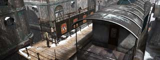
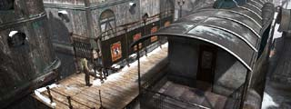

| ロマンスバーグ(前半)  |
| 修道院 |
| ロマンスバーグ(後半) |
雪山 |
| ユコール族の村(前半) |
| 夢の世界 |
| ユコール族の村(後半) |
| 氷山 |
| シベリア |
| 概要 | 地図 |
| 淡いヒント集 | ヒント集 | 的確なヒント集 |
| 攻略最短ルート |
Syberia II
| 目次へ戻る | ページの上部へ |
| ロマンスバーグ(前半)  |
| 修道院 |
| ロマンスバーグ(後半) |
| 雪山 |
| ユコール族の村(前半) |
| 夢の世界 |
| ユコール族の村(後半) |
| 氷山 |
| シベリア |